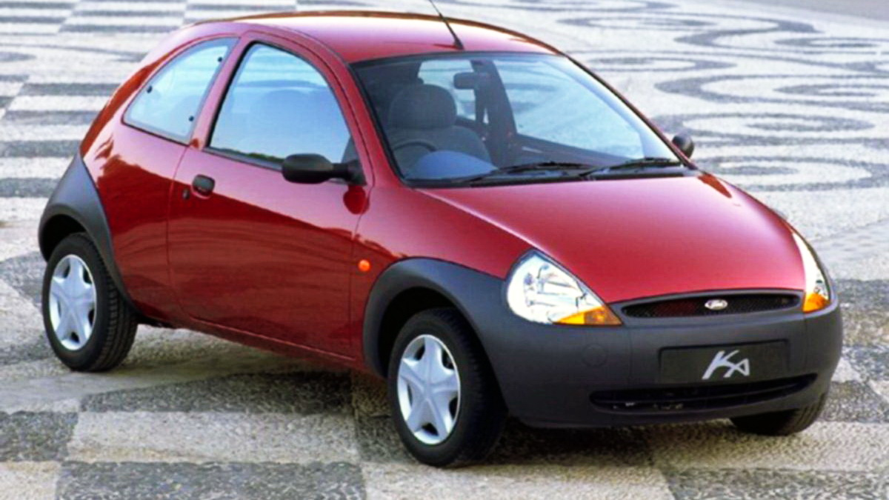
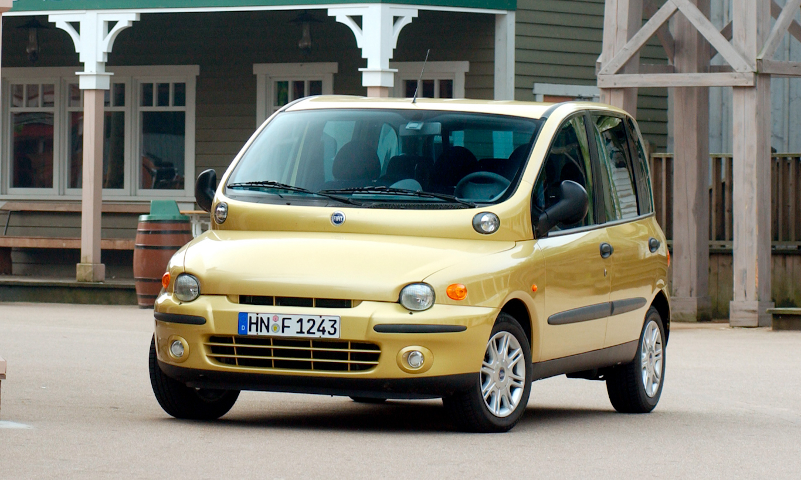
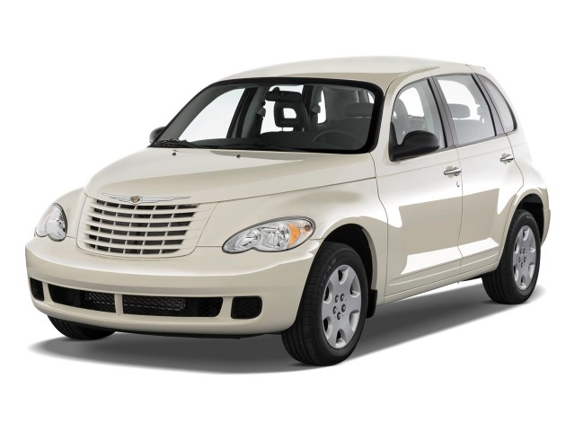

Só vence do Multipla, porque eu VEJO ESSA BOSTA DIRETOOO! Eu passo raiva em Ribeirão!!

Descobri esse NEGÓCIO ao buscar carros... Não sei se fico mais puta por isso ou não. Feliz por essa joça não existir no Brasil, mas o NERVO de ter descoberto!

Ta me falando que a galera gasta um RIM para um carro de funerária????!!!!
